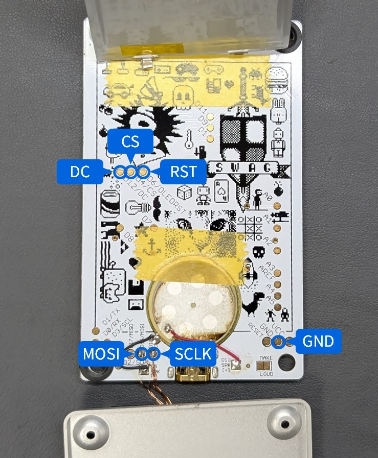

Configuration for Arduboy

See also: LcdTap: TinyJoyPad や Arduboy を大画面で遊ぶ
Level shifter is required between Pico2 (3.3V) and Arduboy depending on its power supply voltage.
The back side of the Arduboy board has exposed Li-Po battery terminals. Be careful not to short them.

Using LcdTap-Pico2 Universal
Connection
| LcdTap (Pico2) | Connection |
|---|---|
| GND | Arduboy’s GND |
| GPIO0 (RST) | Arduboy’s RST (Pin 27) |
| GPIO1 (CS) | Arduboy’s CS (Pin 26) |
| GPIO2 (SCLK) | Arduboy’s SCLK (Pin 15) |
| GPIO3 (MOSI) | Arduboy’s MOSI (Pin 16) |
| GPIO4 (DC) | Arduboy’s DC (Pin 25) |
Configuration
- Load preset for SSD1306.
- Change the interface type to SPI.
Using LcdTap-Pico2 for SSD1306
Connection
| LcdTap (Pico2) | Connection |
|---|---|
| GND | Arduboy’s GND |
| GPIO0 (RST) | Arduboy’s RST (Pin 27) |
| GPIO1 (CS) | Arduboy’s CS (Pin 26) |
| GPIO2 (SCLK) | Arduboy’s SCLK (Pin 15) |
| GPIO3 (MOSI) | Arduboy’s MOSI (Pin 16) |
| GPIO4 (DC) | Arduboy’s DC (Pin 25) |
| GPIO20 (CFG_OUT_720P) | Select according to your display |
| GPIO21 (CFG_LCD_SIZE_SEL) | Open or 3V3 (128x64) |
| GPIO22 (CFG_IFACE_SEL) | GND (SPI) |
| GPIO27 (CFG_ROT[0]) | Open or 3V3 |
| GPIO28 (CFG_ROT[1]) | GND (Rotate 180°) |